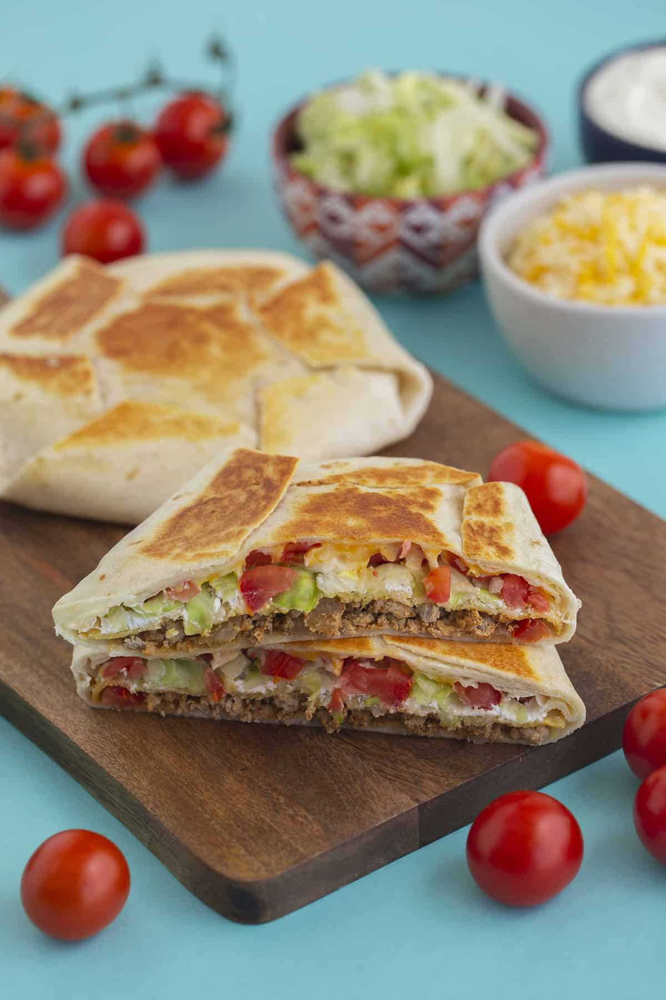

Crunchwrap

Description
This is a recipe for making the Crunchwrap Supreme from taco bell at home. It is delicious this way and I suggest
you try it!
Ingredients
- 1 lb. ground beef.
- 1 tsp. chili powder.
- 1/2 tsp. ground cumin.
- 1/2 tsp. ground paprika.
- Kosher salt.
- Freshly ground black pepper.
- 8 large flour tortillas.
- 1/2 cup nacho cheese sauce.
- 4 tostada shells.
- 1 cup sour cream.
- 2 cups shredded lettuce.
- 1 cup chopped tomatoes.
- 1 cup shredded cheddar.
- 1 cup shredded Monterey Jack.
- 1 Tbsp. vegetable oil.
Steps
- Stack 4 of the large flour tortillas and place a tostada shell in the center. Using a paring knife, trace around the edges of the shell to cut four smaller flour tortilla rounds. These will form the bottom “pleat” of your Crunchwrap.
- Now, it’s time to build the Crunchwraps. Add a scoop of ground beef to the center of the remaining four large flour tortillas, leaving a generous border for folding. Next, drizzle the nacho cheese sauce over each tortilla, then place a tostada shell on top. Spread sour cream over each shell, then top with lettuce, tomato, and cheese.
- Place the smaller flour tortilla cutouts on top and tightly fold edges of the large tortilla toward the center, creating pleats. Quickly invert the Crunchwraps so the pleats are on the bottom and they stay together.
- In the same skillet over medium heat, heat up the vegetable oil. Add your Crunchwrap seam-side down and cook until the tortilla is golden, which will take about 3 minutes per side. Repeat this process with the remaining Crunchwraps until all are toasty and golden brown. Be sure to crack open a Baja Blast alongside your Crunchwrap to really complete this copycat meal, sans drive-thru.
Home